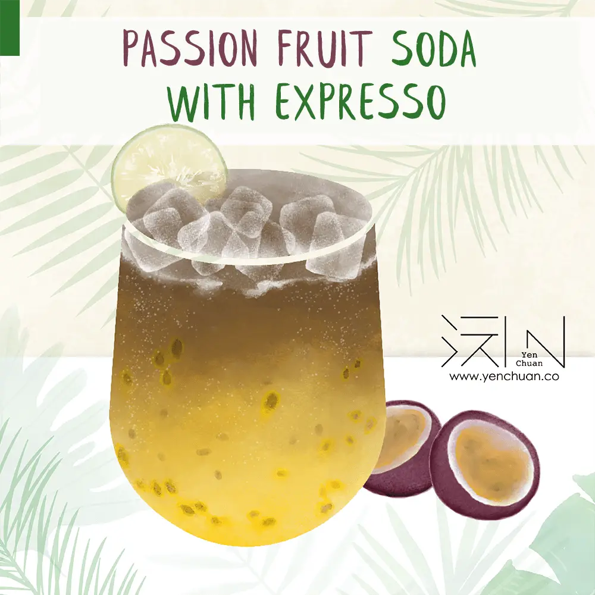
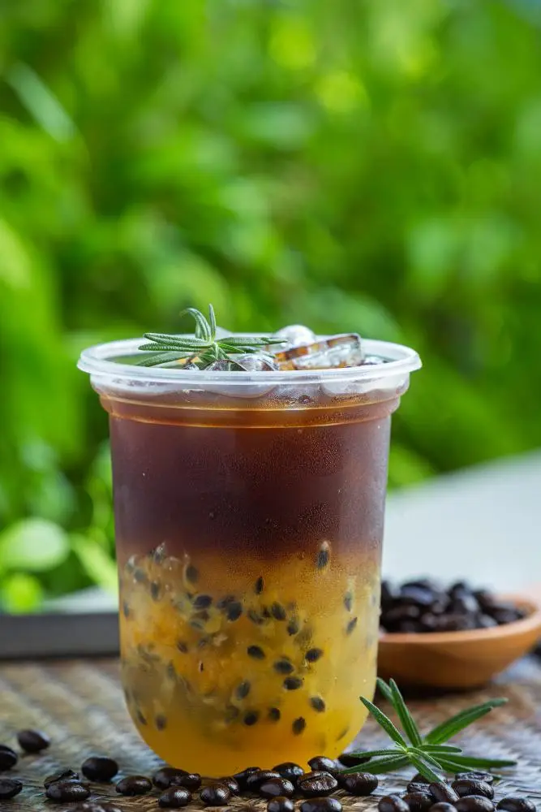

文章 / 飲品配方與資訊
How to make Passion Fruit Soda Espresso
這篇是英文原文，尚未完成繁體中文翻譯。中文選單與相關商品連結不會切回英文介面。

查看英文原文（尚未翻譯）
Looking for a refreshing drink with a unique twist? Why not give this recipe a go? One sip of this delicious combination of passion fruit, soda and espresso is as refreshing as the summer breeze!.
The spicy notes of espresso is boosted by the sweet, tart taste of passion fruit. Meanwhile, the bubbly mouthfeel from the soda gives the drink its memorable final touch! This thirst-quenching drink will make you experience a new taste out of this world.
What’s even better? This recipe is super quick and easy to assemble for no fuss!
Add this perfect summer afternoon pick-me-up to your beverage arsenal!
It suits pretty much every scenario: a weekend brunch, by the pool, parties, or just because you deserve a treat.
Give it a try!
How to make Passion Fruit Soda Expresso
This fresh, fizzy tropical fusion is perfect for summer days!
What you’ll need:
How to make:
Tip: For that extra bit of fizz, cool the drink well.

This fresh, fizzy tropical fusion is perfect for summer days. The flavor is a zesty mix of sweet and tart, with a touch of bitterness and aroma of the coffee.
Add some lime juice and tequila if you want some boozy fun!